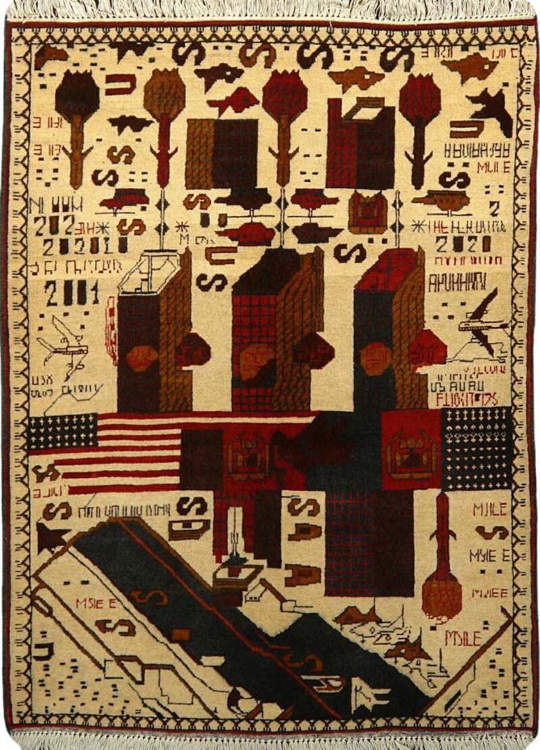

Process & Research
01
02
[In a study by Dr. Tamara Makin at UCL’s Institute of Cognitive Neuroscience, the researcher] "invited participants to wear a robotic 'Third Thumb' (...)
Less than a week after the introduction of the new finger, fMRI scans of the participants’ brains revealed that their natural body representation—the “mental picture” of their own hands in their motor cortex—had changed. (...) Their fingers were collapsing into one another, as though they were being squeezed together to make room for the new thumb."
[01]: An Afghan war rug (2010) depicting the 9/11 attack, with three towers instead of two. [02]: Typical image of a hand generated by Midjourney (2024), with extra fingers. I began my research into the possibility of an adversarial font from the question: what are "machine-like" mistakes, and what are "human-like" ones? What do the types of mistakes each of us makes reveal about "human-ness" and "machine-ness"?
From "The Invisible Hand" (2021), by Claire L. Evans, published on pioneerworks.org
Google Lens attempts (and fails) to read text set in Adversarial Mono